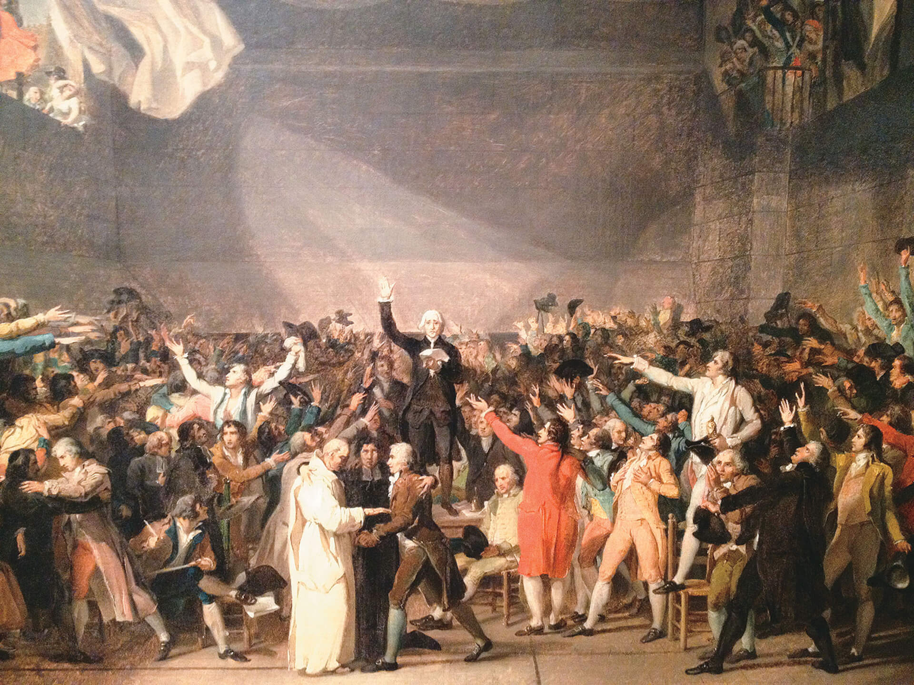
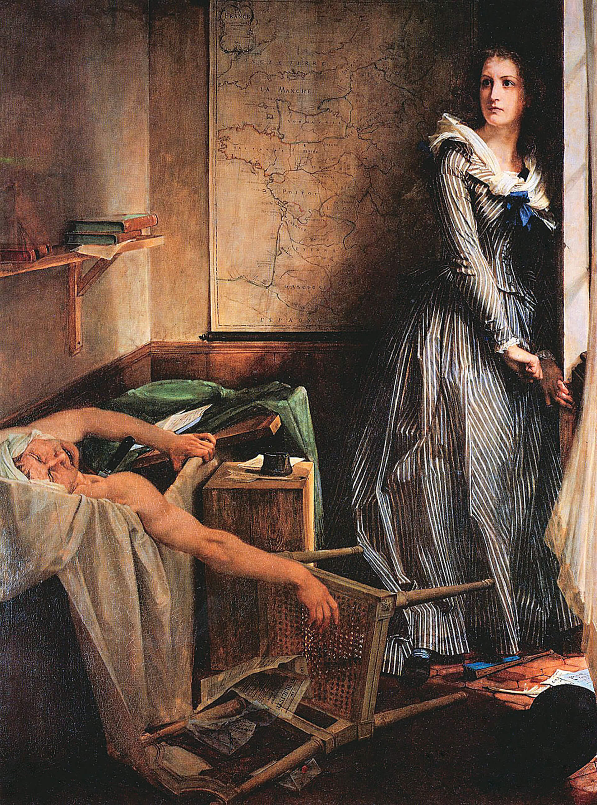

Esta obra de Giorgio Vasari, pintor e escritor renascentista do século XVI, retrata Dante Alighieri, que segura A divina comédia. Ao seu lado, está Francesco Petrarca e, ao fundo, Giovanni Boccaccio.
A imagem remete a um movimento que teve início na Península Itálica no século XIV.
VASARI, Giorgio. Seis poetas toscanos. 1544. 1 óleo sobre tela, color., 132 cm × 131 cm. Instituto de Artes de Minneapolis, Minneapolis.
Introdução
Com os colegas, retome estes assuntos:
Qual movimento é representado na obra de Giorgio Vasari?
Cite as principais características desse movimento.
Objetivos
Estabelecer relações entre Humanismo, Racionalismo e Iluminismo.
Conceituar Iluminismo, destacando a conjuntura do século XVIII na França.
Identificar os principais filósofos iluministas, evidenciando a importância de suas obras.
Compreender o liberalismo econômico, destacando as contribuições de Adam Smith.
Conceituar Despotismo Esclarecido, enfatizando suas principais características.
Relacionar a atuação política dos déspotas esclarecidos ao Iluminismo.
O Iluminismo ou Ilustração foi um movimento filosófico e intelectual que se desenvolveu na Europa no século XVIII, que ficou conhecido como o Século das Luzes. Tal movimento influenciou revoluções burguesas e
movimentos de libertação nas colônias, chegando ao Brasil Colônia. Seu nome tem origem nas iluminuras, na ação de “iluminar” o pensamento em busca da verdade. O termo “iluminismo” foi estabelecido porque os integrantes do movimento
procuravam combater a ignorância, eliminar as superstições e iluminar o seu tempo com novas ideias voltadas para as virtudes, a igualdade e a razão.
A Revolução Científica, que teve início durante o Renascimento, influenciou o pensamento iluminista, trazendo a ideia de que a ciência deveria estar separada da religião. Segundo essa ideia, a ciência deveria buscar respostas para
questões que eram explicadas, até então, exclusivamente pela fé.
Para os iluministas, a razão levaria os seres humanos ao progresso e os libertaria de todos os males, promovendo o bem-estar.
Organize as ideias
Retome alguns assuntos já estudados, fazendo o que se pede a seguir.
Você se lembra do significado dos termos “Humanismo”, “Renascimento”, “absolutismo”, “mercantilismo”? O Antigo Regime foi o período marcado por essas características. Para entender como era a sociedade do Antigo
Regime, relembre o significado desses termos e anote suas respostas. Humanismo:
Absolutismo:
Renascimento:
Mercantilismo:
O Antigo Regime foi caracterizado pela monarquia absoluta, pela economia mercantilista com características agrárias e pela sociedade dividida em segmentos determinados pelo nascimento e com pouca mobilidade social. Os filósofos
iluministas questionaram a sociedade do Antigo Regime, em sua organização política, econômica e social.
A base do pensamento iluminista é o Racionalismo, que pregava que a única forma realmente segura de se chegar à verdade era pelo uso da razão. O conhecimento adquirido por meio do uso de nossos sentidos – visão,
audição, etc. – não poderia ser considerado seguro, pois eles poderiam nos confundir e levar a conclusões erradas sobre determinada situação.
Precursores do Iluminismo
Um dos grandes representantes do Racionalismo foi o francês René Descartes, que viveu entre 1596 e 1650. Embora tenha vivido antes do Século das Luzes (século XVIII), o seu pensamento influenciou vários iluministas.
Descartes pretendia
criar um método de investigação que pudesse ser aplicado a todas as ciências. Ele acreditava que a forma mais segura para se chegar a um conhecimento era por meio da utilização da dúvida e do raciocínio matemático.
DUMESNIL, Pierre-Louis, o Jovem. Descartes na corte da rainha Cristina da Suécia. [séc. XVIII]. 1 óleo sobre tela, color., 97 cm × 126 cm. Museus do Palácio de Versalhes, Versalhes.
Na cena, René Descartes ensina a rainha Cristina da Suécia. Descartes defendia que a capacidade da mente humana é a mesma entre homens e mulheres e independia da condição social do indivíduo.
Troca de ideias
Leia o texto a seguir sobre a elaboração do raciocínio de Descartes.
[...] Ele chegou à conclusão de que a única coisa sobre a qual podia ter certeza era a de que duvidava de tudo. E foi então que compreendeu o seguinte: se havia um fato de que ele podia ter certeza, este fato era de que ele
duvidava de tudo. Se ele duvidava, isto significava que ele pensava. E se ele pensava, isto significava que ele era um ser pensante. Ou, como ele mesmo dizia: “Cogito, ergo sum”.
— E o que significa isto?
— Penso, logo existo.
GAARDER, Jostein. O mundo de Sofia. Tradução de João Azenha Jr. São Paulo: Companhia das Letras, 1995. p. 257.
De acordo com o texto, qual é a base do raciocínio de Descartes para comprovar a sua existência?
O método dedutivo ficou bastante conhecido após a publicação de sua obra Discurso do método. Ele baseava-se no cumprimento de quatro operações principais para a solução de um problema ou o esclarecimento de
uma dúvida: primeiramente, era necessário duvidar de tudo o que fosse apresentado como verdade, iniciando o processo de raciocínio com base na dúvida; em seguida, a questão deveria ser dividida em “partes” menores; começava-se a
resposta ao problema por suas partes mais simples, depois pelas mais difíceis e, então, agrupavam-se os raciocínios de forma que fossem delineando uma resposta para a pergunta; por fim, enumeravam-se todas as conclusões tiradas para
conferi-las, com o objetivo de manter a ordem dos pensamentos.
Se você pensar na forma como resolve problemas em sua aula de Matemática, observará que é mais ou menos assim que transcorre a solução deles, não é mesmo? As ideias de Descartes mostraram-se muito adequadas à resolução de problemas
matemáticos, nem sempre podendo ser aplicada com sucesso a questões de outras áreas. Independentemente disso, o trabalho desse estudioso exerceu influência sobre áreas das Ciências Humanas, como a Filosofia, e contribuiu para o
fortalecimento do movimento humanista que colocava o indivíduo como alvo para o qual deveriam convergir todos os esforços humanos.
Cotidiano
Certamente você já se deparou com um plano cartesiano em suas aulas de Matemática. O plano cartesiano trabalha a noção de localização vertical e horizontal de um ponto. Ele foi uma das criações do filósofo Descartes e tem muitas
utilidades práticas – o uso de latitudes e longitudes para determinar a localização de certo local no espaço, por exemplo, baseia-se no plano cartesiano. Os aparelhos de GPS (Global Position System), que servem para dar a
localização de uma pessoa ou local no espaço, utilizam como referência essas linhas imaginárias.

Você já precisou usar um GPS? Em qual situação?
Organize as ideias
Reflita sobre as questões a seguir.
Na página 2, retomamos o conceito de Humanismo. Vamos agora construir uma definição para Racionalismo.
Agora, com o conhecimento sobre Humanismo e Racionalismo, explique a relação que há entre eles.
O inglês John Locke (1632-1704) viveu nos atribulados anos da Revolução Puritana (1642-1648) na Inglaterra e assistiu à ascensão da burguesia ao poder do Parlamento. Ele publicou a obra Segundo tratado sobre o
governo civil e outros escritos, na qual defende o Estado como mecanismo capaz de garantir a segurança e a propriedade das pessoas. Locke alertava que, na ausência do Estado, as pessoas não teriam seus direitos
naturais respeitados: a vida, a liberdade e a propriedade; por isso, era necessário estabelecer um contrato social. Por esse contrato, os indivíduos cederiam parte de sua liberdade ao Estado, para terem os benefícios da vida
em sociedade. Ele defendia que, quando o Estado não garantia aos seus cidadãos esses direitos naturais, o povo tinha o direito de se rebelar.
KNELLER, Godfrey. Retrato de John Locke. 1697. 1 óleo sobre tela, color., 76 cm × 64 cm. Museu Estadual Hermitage, São Petersburgo.
Além da formulação dos direitos naturais, John Locke defendia a tolerância religiosa e o empirismo, ou seja, que o conhecimento só poderia ser obtido por meio da experimentação e da observação para depois se fazer uma interpretação
sensorial. Para Locke, a mente dos seres humanos ao nascer é como um papel em branco, que vai sendo escrito com base na experiência.
GAINSBOUROUGH, Thomas. Sr. e Sra. Andrews. 1750. 1 óleo sobre tela, color., 69,8 cm × 119, 4 cm. Galeria Nacional, Londres.
A pintura feita sob encomenda ao retratista valoriza a propriedade (as terras), considerada por John Locke um dos direitos naturais dos indivíduos. A obra está inacabada no vestido da senhora. Especula-se que seria preenchida com
uma criança
Filósofos iluministas
Foi na França que a filosofia iluminista atingiu sua plenitude, estimulando mudanças radicais. O pensamento iluminista foi formulado por um grupo de intelectuais que tinham uma visão crítica da sociedade na qual viviam.
De maneira geral, pode-se dizer que eles se preocupavam muito com questões políticas e escreveram bastante sobre elas. Suas ideias tiveram grande influência no período em que viveram, alterando os rumos da política e gerando mudanças
que influenciam a forma como vivemos na atualidade. Os iluministas acreditavam que o conhecimento humano advindo do pensamento racional traria o progresso. Conheça algumas das ideias principais dos filósofos iluministas.
O filósofo Voltaire, pseudônimo de François-Marie Arouet, nasceu na França no ano de 1694 e viveu até 1778. Ele era um humanista; portanto, valorizava todos os produtos da razão humana, como a capacidade de se
expressar e tomar decisões sem ser subjugado pelo governo ou pela Igreja. Para ele, o governo deveria, sim, existir; porém, seus poderes deveriam ser limitados por uma legislação. Defendia também a diminuição dos privilégios do clero e
da nobreza, a liberdade de imprensa e a cobrança justa de impostos que fossem revertidos para o bem da sociedade.
HUBER, Jean. Voltaire narrando uma fábula. [séc. XVIII]. 1 óleo sobre painel, color., 33 cm × 23 cm. Coleção particular.
Imagem que retrata Voltaire contando uma das inúmeras fábulas que escreveu
Voltaire foi um severo crítico da instituição Igreja Católica e da intolerância religiosa. Para ele, apenas a liberdade religiosa impediria que uma Igreja se impusesse sobre as demais instituições. Ele terminava todos
os seus escritos com a afirmativa “Esmagai a infame”, para ele, a Igreja. Entretanto, ele não era ateu e acreditava que a crença na existência de um ser supremo contribuía para a manutenção da ordem social. É atribuída também a ele a
afirmação: “Se Deus não existisse, seria necessário inventá-lo”.
Organize as ideias
Sobre o pensamento de Voltaire, leia este fragmento.
A escola de Voltaire, cética e frívola, mais literária do que filosófica, tendia, antes de tudo, a destruir o altar. Poupava Deus, mas combatia o clero. O famoso argumento de seu fundador – Se não existisse Deus, seria preciso
inventá-lo – sintetiza bem o ceticismo doutrinal da escola. Para ela, Deus era antes uma necessidade lógica do que uma verdade real. O seu ideal supremo era a liberdade.
SOBOUL, Albert. A Revolução Francesa. São Paulo: Difel, 2003. p. 8.
De acordo com o fragmento, analise as afirmativas a seguir.
Voltaire criticava a Igreja e o clero católico por todos os séculos de censura e castigos que estes causaram aos seres humanos, durante sua primazia no continente europeu.
Voltaire, entretanto, acredita em Deus como uma força superior criadora do Universo.
A crença em Deus, segundo Voltaire, era necessária para que os seres humanos pudessem viver em sociedade. Segundo ele, a humanidade deveria temer alguma força superior a ela para o respeito às leis e às normas sociais.
De acordo com a análise das afirmativas, assinale a alternativa correta:
a) Todas as afirmativas estão certas.
b) Todas as afirmativas estão erradas.
c) Apenas as afirmativas I e II estão certas.
d) Apenas a afirmativa I está certa.
e) Apenas as afirmativas I e III estão certas.
Outra importante contribuição filosófica desse período foi dada por Charles Louis de Secondat – o Barão de Montesquieu –, francês que viveu de 1689 a 1755. Em sua principal obra, O espírito das leis,
Montesquieu defendeu a ideia de
que, no poder político absolutista, os governantes atuavam por suas ambições pessoais. Além disso, envolvem-se em guerras frequentes, gerando sofrimento e miséria ao povo. A única maneira de controlar os governantes seria pela divisão
dos poderes, de forma que um possa fiscalizar os outros.
RETRATO de Montesquieu. 1728. 1 óleo sobre tela, color., 63 cm × 52 cm. Museus do Palácio de Versalhes, Versalhes.
Pesquisa
Leia o texto a seguir
Para salvaguardar a liberdade contra o despotismo, Montesquieu defendia o princípio da separação dos três poderes. Em todo governo, dizia Montesquieu, existem três tipos de poder: legislativo, executivo e judiciário. Quando uma
única pessoa, ou órgão exerce todos os três poderes – se o mesmo órgão que instaura um processo é o que julga, por exemplo –, a liberdade não pode ser preservada. Sempre que a soberania concentra-se nas mãos de uma só pessoa ou
organismo, há abuso de poder e a liberdade política é negada.
PERRY, Marvin. Civilização ocidental: uma história concisa. Tradução de Waltensir Dutra e Silvana Vieira. São Paulo: Martins Fontes, 2015. p. 300.
Faça uma pesquisa sobre os poderes Executivo, Legislativo e Judiciário no âmbito federal no Brasil atual, respondendo a estas questões:
Quem exerce esses poderes?
Qual é a função de cada um desses poderes?
De que forma as pessoas são escolhidas para representá-los?
Jean-Jacques Rousseau era suíço e viveu de 1712 até 1778. Assim como Voltaire e Montesquieu, ele também buscava uma forma de governo mais justa. Em seus livros Discurso sobre a origem da desigualdade social e O
contrato social, Rousseau afirmou que o Estado era injusto e opressor. De acordo com ele, os problemas políticos e sociais estavam relacionados justamente à existência da propriedade privada, sobretudo à posse de terras, pois aí
estaria a origem da desigualdade social. Ele propunha que o regime de governo ideal era a democracia direta, no modelo que prevaleceu em Atenas na Grécia Antiga. Nesse modelo, cada cidadão poderia participar das decisões do governo e o
Estado seria administrado por representantes escolhidos por serem justos e esclarecidos.
THEVENIN. Jean-Jacques Rousseau. 1764. 1 gravura em aço. Biblioteca Municipal de Lyon, Lyon.
Jean-Jacques Rousseau considerava que a sociedade europeia ocidental não era o ideal de progresso e convivência humana, mas que esse existia no estado da natureza e não em meio à vida em sociedade. Esse pensamento deu origem ao
“mito do bom selvagem”.
Interpretando documentos
A seguir, há trechos das obras de Voltaire, Montesquieu e Rousseau. Identifique a qual deles pertence o trecho, colocando entre parênteses a inicial do nome de seu autor.
(___) O verdadeiro fundador da sociedade civil foi o primeiro que, tendo cercado um terreno, lembrou-se de dizer “isto é meu” e encontrou pessoas suficientemente simples para acreditá-lo. Quantos crimes, guerras, assassínios, misérias
e horrores não pouparia ao gênero humano aquele que, arrancando as estacas ou enchendo o fosso, tivesse gritado a seus semelhantes: “Defendei-vos de ouvir esse impostor; estareis perdido se esquecerdes de que os frutos são de todos e
que a terra não pertence a ninguém!”.
(___) Tudo estaria perdido se o mesmo homem, ou o mesmo corpo dos principais, ou dos nobres, ou do povo exercesse os três poderes: o de fazer as leis, o de executar as resoluções públicas e o de julgar os crimes ou as querelas entre os
particulares.
(___) Rogo-vos que vejais as consequências terríveis do direito da intolerância. Se fosse permitido despojar de seus bens, lançar no cárcere, matar um cidadão que não professasse a religião estabelecida, que exceção eximiria os
mandatários do Estado das mesmas penas? A religião une igualmente o monarca e os mendigos.
O enciclopedismo
Um importante desdobramento do Iluminismo do século XVIII foi o movimento enciclopedista. O objetivo dos enciclopedistas era criar uma obra que reunisse o conhecimento humano sob a ótica iluminista. Os principais envolvidos na produção
desses livros foram o filósofo Denis Diderot e o matemático Jean D’Alembert. Entre os anos de 1751 e 1772, foram produzidos 35 volumes que contaram com a contribuição de nomes importantes, como Voltaire, Rousseau e Montesquieu.
A Enciclopédia ou dicionário razoado das Ciências, das Artes e dos Ofícios pretendia reunir todo o conhecimento humano até então, além de divulgar o pensamento iluminista. Os livros da Enciclopédia e seus criadores sofreram
inúmeras perseguições na França. Suas obras foram incluídas no Índice de Livros Proibidos (Index) da Igreja Católica pelo papa Clemente XIII, que considerou que publicações como essa incitavam o desprezo pela religião
COCHIN, Charles-Nicolas; PRÉVOST, Bonaventure-Louis. Frontispícios da Enciclopédia. 1772. 1 ilustração.
No centro da gravura, foi representada a verdade
Cotidiano
Apesar de, na atualidade, ser comum consultarmos enciclopédias virtuais, ainda existem muitas famílias que guardam enciclopédias impressas em casa. Sua família tem alguma dessas coleções de livros em casa, ou você conhece alguém
que as possua? Se não existir nenhuma em sua casa, talvez possa encontrar alguma na biblioteca da escola. Você já utilizou alguma enciclopédia impressa a fim de realizar um trabalho escolar? Aproveite a oportunidade para conhecer
uma enciclopédia ou para entrar em contato novamente com ela. Na atualidade, de maneira geral, como são realizadas as pesquisas?
Os iluministas buscavam iluminar, ou seja, levar às pessoas a luz do conhecimento, com a finalidade de construir uma sociedade melhor, livre da superstição e em direção ao progresso.
LEMONNIER, Anicet-Charles-Gabriel. No salão de Madame Geoffrin em 1755. 1812. 1 óleo sobre tela, color., 126 cm × 195 cm. Castelo de Malmaison, Rueil.
Era comum que os filósofos iluministas se encontrassem nos salões literários, onde discutiam suas ideias e liam seus escritos para uma plateia atenta. Muitas vezes, essas reuniões eram promovidas por mulheres da alta sociedade. Alguns
desses salões tornaram-se muito famosos, como o mostrado na obra acima, promovido por Madame Geoffrin. Na tela do artista Lemonnier, foram retratados vários importantes filósofos iluministas, como Rousseau, Montesquieu, Diderot e
D’Alembert. Eles foram reunidos para a leitura de uma obra teatral denominada Órfãos da China, escrita por Voltaire, representado no salão por uma estátua de seu busto.
Pesquisa
Escolha um dos temas a seguir e faça uma pesquisa sobre ele. Depois, compartilhe com os colegas os resultados encontrados.
As atividades praticadas nos salões culturais em Paris no século XVIII.
A importância de tais salões para a difusão da filosofia iluminista.
O papel das mulheres na promoção desses salões.
Os salões literários na atualidade.
Liberalismo econômico
Como críticos da sociedade na qual viviam, os iluministas também não pouparam o sistema econômico mercantilista de uma análise. Um dos principais grupos a criticar tal sistema foi o dos fisiocratas, que defendiam a teoria de que a
terra e a agricultura eram as únicas fontes de riquezas. Segundo eles, o comércio seria responsável apenas por transformar e redistribuir essas riquezas pelo planeta.
O escocês Adam Smith (1732-1790), na obra A riqueza das nações, afirma que a principal fonte geradora de riqueza era o trabalho aliado ao capital. Para ele, a riqueza das nações não era medida
por suas reservas de metais preciosos, como defendia o mercantilismo, mas por seus bens e serviços. Conforme o pensamento dele, o Estado tinha como função a segurança, a justiça e a construção de obras públicas.
Adam Smith acreditava que a lei da oferta e da procura regulava o mercado, motivo pelo qual não era necessário que o Estado interviesse na economia. De acordo com essa ideia, quanto maior a disponibilidade de um produto, menor seria o
preço dele. Por outro lado, quanto menor a sua disponibilidade, maior seria o preço.

@Biblioteca do Congresso, Washington, D.C.
KAY, John. Adam Smith. 1790. 1 gravura. Biblioteca do Congresso, Washington, D.C.
As teorias defendidas por Adam Smith tiveram grande impacto na economia mundial com o desenvolvimento do capitalismo. Ele é considerado o “pai” do liberalismo econômico, defendendo a livre concorrência e a livre iniciativa.
Uma das principais ideias defendidas por ele é a da especialização do trabalho. Segundo ela, cada nação deveria se dedicar a um tipo de atividade produtiva. Esta seguiria sua vocação natural, ou seja, estaria de acordo com as
matérias-primas disponíveis em cada região e as técnicas utilizadas para a produção de determinado material.
Despotismo Esclarecido
O desenvolvimento das ideias liberais, do Racionalismo, do Humanismo e do enciclopedismo mudou a forma de pensar das pessoas no Período Moderno. Essas mudanças se refletiram na economia e na política.
Assim, alguns monarcas que governavam com poderes absolutos (também chamados de déspotas) promoveram reformas em seus governos, de forma que atendessem a algumas das mudanças sugeridas pelos filósofos. Foram assim denominados
déspotas esclarecidos, pois haviam sido “iluminados”, “esclarecidos” pelas “luzes” da razão, ou seja, pelo Iluminismo. Entretanto, não abriram mão do poder absoluto.
Nesse sentido, destacaram-se o rei Frederico II, da Prússia, a rainha Catarina II, da Rússia, o rei José II, da Áustria, e o primeiro-ministro Marquês de Pombal, de Portugal, durante o governo do rei Dom José I (1750 a 1777).
As reformas de Pombal ficaram famosas e tiveram reflexos diretos no Brasil, Colônia portuguesa. Pombal reorganizou o exército, retirou privilégios do clero e da nobreza, incentivou a educação por meio da reforma da Universidade de
Coimbra e da criação de várias escolas primárias, além de impulsionar o desenvolvimento econômico de Portugal – indústria, agricultura e comércio. No Brasil, fortaleceu o poder das autoridades locais. Essa medida foi malvista por grande
parte da população colonial, o que causou várias revoltas.
Como você pôde perceber, foram muitas as mudanças que ocorreram na Europa durante o século XVIII. E que essas mudanças tiveram reflexos no Brasil.
LOO, Louis-Michel van. Retrato de Sebastião José de Carvalho e Melo, Marquês de Pombal. 1766. 1 óleo sobre tela, color., 60,5 cm × 76,5 cm. Museu de Lisboa, Lisboa.
Em 1755, a cidade de Lisboa, capital de Portugal, foi praticamente destruída por um terremoto, o que resultou na morte de 30 mil pessoas. Sua reconstrução foi confiada ao Marquês de Pombal. Por ser muito eficiente nessa tarefa, ele
acabou assumindo um papel muito importante na reformulação de vários aspectos da política portuguesa.